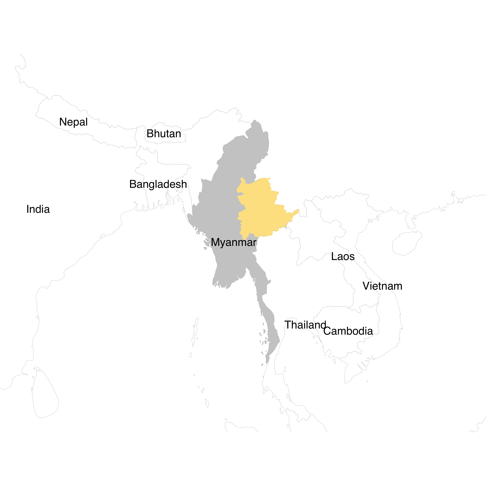
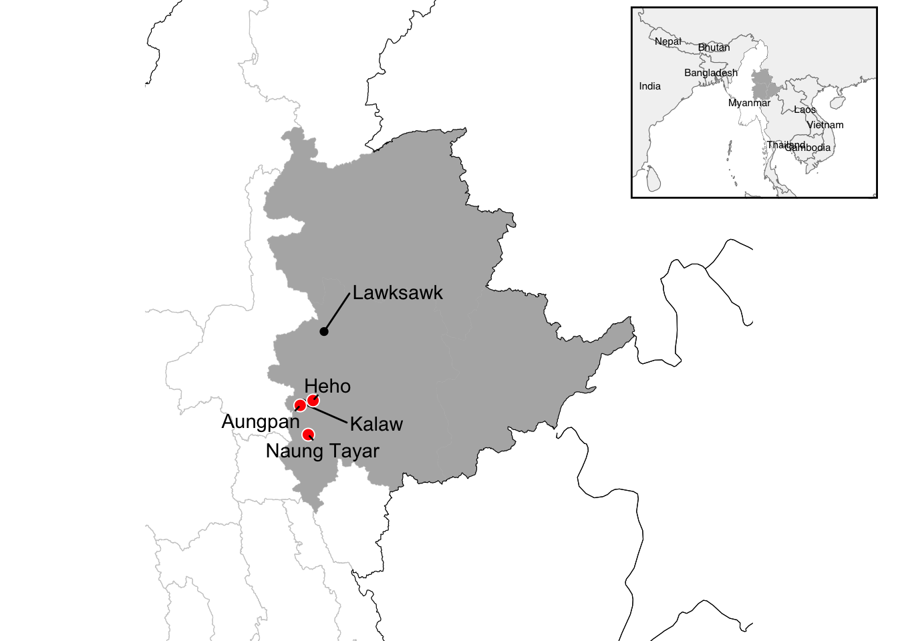

library(sf)
library(dplyr)
library(ggplot2)
library(ggrepel)
library(rnaturalearth)
library(rnaturalearthdata)
library(cowplot)
outdir <- "../data/map"
figdir <- "../fig"
dir.create(outdir, showWarnings = FALSE, recursive = TRUE)
dir.create(figdir, showWarnings = FALSE)Mapping Myanmar
1 Data
NoteGitHub - laravel-stack/laravel-geo-json-myanmar: Laravel GeoJSON Myanmar
NoteGitHub - ropensci/rnaturalearth: An R package to hold and facilitate interaction with natural earth map data :earth_africa:
2 World Map
world <- ne_countries(scale = "medium", returnclass = "sf") |>
st_make_valid()
mmr <- world |>
filter(admin == "Myanmar")
countries <- c(
"Myanmar","Bangladesh","India","China","Laos","Thailand",
"Cambodia","Vietnam","Malaysia","Indonesia","Nepal","Bhutan"
)
bb <- st_bbox(mmr)
pad <- 5
xlim <- c(bb$xmin - pad * 3, bb$xmax + pad * 3)
ylim <- c(bb$ymin - pad, bb$ymax + pad)
label_pts <- world |>
st_point_on_surface()
label_df <- label_pts |>
st_drop_geometry() |>
bind_cols(as.data.frame(st_coordinates(label_pts))) |>
filter(admin %in% countries) |>
distinct(admin, .keep_all = TRUE) |>
mutate(admin = factor(admin, levels = countries))3 Regional Maps of Myanmar
get_myanmar_geojson <- function(url, dir = outdir) {
file_name <- basename(url)
file_path <- file.path(dir, file_name)
if (!file.exists(file_path)) {
download.file(url, file_path)
}
read_sf(file_path)
}
urls <- list(
Country = "https://raw.githubusercontent.com/laravel-stack/laravel-geo-json-myanmar/main/dist/geojson/country.geojson",
District = "https://raw.githubusercontent.com/laravel-stack/laravel-geo-json-myanmar/main/dist/geojson/districts.geojson",
State_Region = "https://raw.githubusercontent.com/laravel-stack/laravel-geo-json-myanmar/main/dist/geojson/state-regions.geojson",
Township = "https://raw.githubusercontent.com/laravel-stack/laravel-geo-json-myanmar/main/dist/geojson/townships.geojson"
)
map <- lapply(urls, get_myanmar_geojson)
township_sel <- map[["Township"]] |>
filter(TS %in% c("Kalaw", "Lawksawk")) |>
mutate(TS = factor(TS, levels = c("Kalaw", "Lawksawk")))
proj_crs <- 32647 # UTM 47N
township_pts <- township_sel |>
st_transform(proj_crs) |>
st_centroid() |>
# st_point_on_surface() |>
st_transform(st_crs(township_sel))
Shan_State <- map[["State_Region"]] |>
filter(grepl("Shan", ST))
bb_ss <- st_bbox(Shan_State)
pad <- 1.6
xlim_ss <- c(bb_ss$xmin - pad, bb_ss$xmax + pad)
ylim_ss <- c(bb_ss$ymin - pad, bb_ss$ymax + pad)
mmr_buf <- mmr |>
st_transform(proj_crs) |>
st_buffer(50) |> # .05km
st_transform(st_crs(world))
borders_no_mmr <- world |>
st_cast("MULTILINESTRING") |>
st_difference(mmr_buf)
places_sf <- tibble::tribble(
~name, ~lon, ~lat,
"Heho", 96.8217017, 20.723192,
"Naung Tayar", 96.7570337, 20.293742,
"Aungpan", 96.6477771, 20.661791
) |>
sf::st_as_sf(coords = c("lon", "lat"), crs = 4326) |>
sf::st_transform(sf::st_crs(map[["Township"]]))4 Plotting the Maps
world_map <- ggplot() +
geom_sf(data = world, fill = "grey95", color = "grey50", linewidth = .2) +
geom_sf(data = mmr, fill = "white", color = NA) +
# geom_sf(data = map[["State_Region"]], fill = NA, color = "grey80", linewidth = .2) +
geom_sf(data = map[["State_Region"]] |> filter(grepl("Shan", ST)), fill = "grey70", color = NA) +
coord_sf(xlim = xlim, ylim = ylim, expand = 0) +
theme_void()
world_map_text <- world_map +
geom_text(data = label_df, aes(x = X, y = Y, label = admin), size = 4, family = "Helvetica")
world_map_text
Saving 7 x 5 in imagedetailed_map <- ggplot() +
geom_sf(data = borders_no_mmr, fill = "grey95", color = "black", linewidth = .2) +
geom_sf(data = map[["State_Region"]], fill = NA, color = "grey80", linewidth = .2) +
geom_sf(data = Shan_State, fill = "grey70", color = NA) +
geom_sf(data = map[["Country"]], fill = NA, color = "black", linewidth = .2) +
geom_sf(data = township_pts, shape = 16, size = 2, fill = "white", color = "black") +
geom_text_repel(
data = township_pts,
aes(label = TS, geometry = geometry),
nudge_x = c(1, 1),
nudge_y = c(-.25, .5),
stat = "sf_coordinates",
min.segment.length = 0,
family = "Helvetica"
) +
geom_sf(data = places_sf, shape = 21, size = 3, fill = "red", color = "white") +
geom_text_repel(
data = places_sf,
aes(label = name, geometry = geometry),
stat = "sf_coordinates",
min.segment.length = 0,
seed = 123
) +
coord_sf(xlim = xlim_ss, ylim = ylim_ss, expand = 0) +
theme_void()
detailed_map
Saving 7 x 5 in imageWarning in st_point_on_surface.sfc(sf::st_zm(x)): st_point_on_surface may not
give correct results for longitude/latitude data
Warning in st_point_on_surface.sfc(sf::st_zm(x)): st_point_on_surface may not
give correct results for longitude/latitude datadetailed_world_map <- ggdraw(detailed_map) +
draw_plot(
{world_map +
geom_text(data = label_df, aes(x = X, y = Y, label = admin), size = 2, family = "Helvetica") +
theme(panel.border = element_rect(colour = "black", fill = NA, linewidth = 1))
},
x = .69,
y = .69,
width = .3,
height = .3)
detailed_world_map
Saving 7 x 5 in image